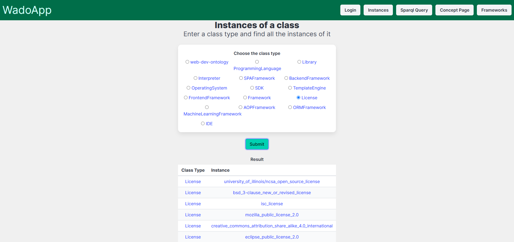

Scholarly HTML
Introduction
Welcome to the documentation of the WADO App, a web application designed to highlight the capabilities of the Semantic Web and demonstrate the power of ontologies in web development. The application provides users with a platform to explore programming languages, frameworks, and related topics in a structured and interactive manner.
This documentation is structured to provide usage scenarios for the application, to help users understand how to use it. For more details regarding the pages or other features of the application, please refer to the Scholarly HTML, from the side menu.
Scenario 1 - Account Creation
When you first visit the application, you will be greeted with the Welcome page. To access the full functionality of the application, you will need to create an account. To do this, click on the "Register" button in the top right corner of the page.
Welcome Page
Register Page
Login Page
Scenario 2 - View all the instances of a class
Select "Instances" button from the navigation bar to enter in the dedicated page.
Navigation Bar

Instances Page
Click the submit button
Result after clicking on "Submit"
Scenario 3 - Running a SparQL Query
Select "SparQL" button from the navigation bar to enter in the dedicated page.
Navigation Bar
SparQL Page
Example of a SparQL query
Example of a SparQL query result